Antitheft and Alarm Systems: Testing and Inspection
Inspection
Front Door Lock Actuator Inspection
1. Remove the front door trim.
2. Remove the front door module.
3. Disconnect the 7P connector from the actuator.
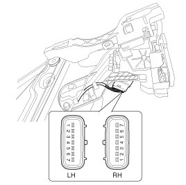
4. Check actuator operation by connecting power and ground according to the table. To prevent damage to the actuator, apply battery voltage only momentarily.
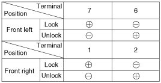
Rear Door Lock Actuator Inspection
1. Remove the rear door trim.
2. Remove the rear door module.
3. Disconnect the 7P connector from the actuator.

4. Check actuator operation by connecting power and ground according to the table. To prevent damage to the actuator, apply battery voltage only momentarily.
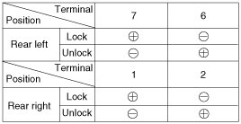
Trunk Lid Release Actuator Inspection
1. Remove the trunk lid trim panel.
2. Disconnect the 3P connector from the actuator.
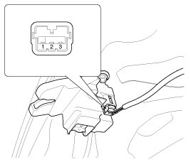
3. Check actuator operation by connecting power and ground according to the table. To prevent damage to the actuator, apply battery voltage only momentarily.
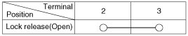
Front Door Lock Switch Inspection
1. Remove the front door trim panel.
2. Remove the front door module.
3. Disconnect the 7P connector from the actuator.

4. Check for continuity between the terminals in each switch position when inserting the key into the door according to the table.
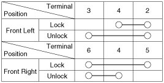
Rear Door Lock Switch Inspection
1. Remove the rear door trim panel.
2. Remove the rear door module.
3. Disconnect the 7P connector from the actuator.
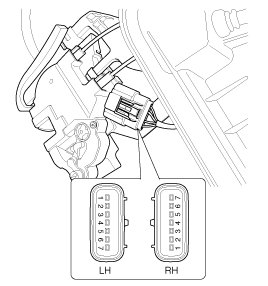
4. Check for continuity between the terminals in each switch position according to the table.
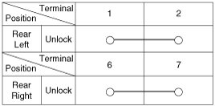
Trunk Lid Open Switch Inspection
1. Remove the trunk lid trim.
2. Disconnect the 3P connector from the actuator.
3. Check for continuity between the terminals in each switch position according to the table.
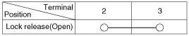
Door Switch Inspection
Remove the door switch and check for continuity between the terminals.
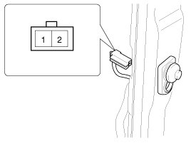
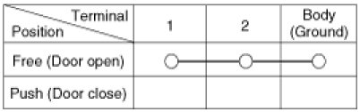
Hood Switch Inspection
1. Disconnect the connector from the hood switch (A).
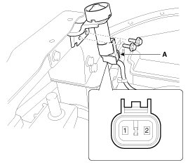
2. Check for continuity between the terminals and ground according to the table.
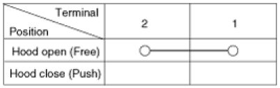
Burglar Horn Inspection
1. Remove the burglar horn (A) after removing 1 bolt and disconnect the 2P connector from the burglar horn.
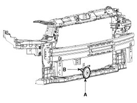
2. Test the burglar horn by connecting battery power to the terminal 1 and ground the terminal 2.
3. The burglar horn should make a sound. If the burglar horn fails to make a sound replace it.